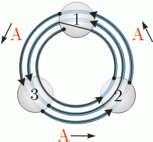

|
|||||||||||||||||
|
Server time: 2006-01-10 05:48:27 |
SPOJ Problem Set275. The Water RingroadProblem code: WATERWAY
There is a land far, far away were the entire population dwells in walled cities at the peaks of mountains on the circumference of a plateau known as The Circle. The High Councillors of the cities developed an intricate system of communication: the cities were connected into a cycle by a perfectly round waterway. If need arose, a small paper boat with a message tied to its sail was released into the waterway and was guided by its solitary crew member (a small tin soldier) from one city to the next, and so on, until it reached its destination. Some segments of the waterway were only passable in one direction (due to waterfalls), and so there may have been pairs of cities for which communication was impossible. As the centuries went by, the system slowly began to show its weaknesses. The waterway was so narrow that two boats going in opposite directions could never pass each other. To make matters worse, some of the more enterprising cities replaced the tin soldier by a plastic one to increase the speed of the boat, and the faster boats had to queue up behind the slower ones, and everyone got very angry indeed. The councillors gathered to address the problem and found that the best course of action would be to construct two separate channels between every pair of communicating cities A and B: one for carrying messages from A to B, the other from B to A (if communication was impossible in some direction in the old waterway, it needn't be enabled in the new one). The High Priests of the Circle were the first to protest against the plan. They insisted that any waterway ever built should be circular and go round all the cities in the same manner as the original one, and the route of any boat must always be a perfect arc between any two adjacent cities. So the newly designed channels would in fact have to be composed of sets of adjacent fragments of circles, without any two channels sharing an arc. The engineers have quite rightly pointed out that the new circles will be prone to the same problem of waterfalls on the same sections as the original waterway. Bearing this in mind, given a map of the old waterway, calculate the smallest possible number of circles the new waterway may consist of. InputInput begins with integer t<=100, the number of test cases. t test cases follow. Each test case consists of two lines. The first contains a single integer n (3<=n<=100000), the number of cities around the Circle. The second line is a description of the old waterway - a sequence of exactly n characters 'A', 'B' or 'C', without separating spaces, terminated by a new line. These characters correspond to the state of the arcs between cities 1 and 2, 2 and 3,..., n-1 and n, n and 1, respectively, and mean: 'A' - the arc is passable when going anticlockwise, 'B' - the arc is passable in both directions, 'C' - the arc is passable when going clockwise. OutputFor each test case output a line, containing a single integer - the number of circles required for the new waterway. ExampleInput: 2 3 AAA 4 BACB Output: 3 5 A solution to the first test case which requires 3 circles is presented below. 
|
||||||||||||||||
| |||||||||||||||||